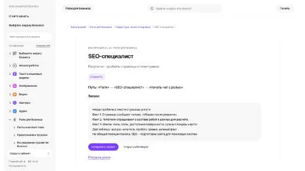
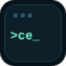
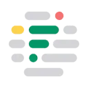

МолекулаАгрегаторы нейросетей
Молекула объединяет модели для текстов, изображений, видео и музыки. В одном аккаунте можно подобрать инструмент под этап работы, сохранить инструкции проекта и использовать готовые роли.
К задаче в МолекулеSEO-инструменты: Сравните источники данных, регион поиска и способ обновления показателей. Уникальный текст должен отвечать на вопрос пользователя; объём и повторе
Дайте Молекуле текст страницы и реальные вопросы посетителей. Получится план содержательных правок: какие условия раскрыть и какие сведения запросить у владельца услуги.
На странице ремонта велосипедов указаны только адрес и телефон. Посетители спрашивают про диагностику, запись и согласование стоимости. Подготовь перечень недостающих блоков и фактов для каждого.

Молекула объединяет модели для текстов, изображений, видео и музыки. В одном аккаунте можно подобрать инструмент под этап работы, сохранить инструкции проекта и использовать готовые роли.
К задаче в Молекуле«Ai Buster» связан с рабочими процессами WordPress.
«aiKTP» готовит текстовый черновик по условиям задачи. «aiKTP» помогает с задачами поискового продвижения.
Сравнивать «Alt Text Generator» с другими инструментами раздела «Тексты и контент» удобнее на одинаковом исходном материале.
«BekiAI» помогает с задачами поискового продвижения.
«Eye2 AI» работает с задачами проверки личности.
«Nightwatch» помогает с задачами поискового продвижения.
Ryrob генерирует заголовки для публикаций блога с участием ИИ и машинного обучения. Инструмент ориентирован на поисковую тематику и целевую аудиторию автора. Пользователь получает варианты формулировок, которые можно рассматривать при выборе заголовка и подготовке представления материала своему читателю.
Для «Seona AI (seona.usestyle.ai)» сначала определите свою задачу и требуемый результат. Карточка относится к направлению «Маркетинг».

AirOps рассчитан на задачи, где нужно исследовать тему и разбирать найденную информацию. Ещё одно направление работы: сокращать материал до основных положений.

ContentEdge создаёт письменный контент средствами языковой модели ИИ. Продукт также предоставляет инструмент исследования ключевых слов для сайта. Эти функции связывают подготовку публикации с рассмотрением поисковых запросов, которые пользователь учитывает при планировании содержания и дальнейшей работе над текстовыми материалами своего ресурса.
Для «Deepl Write» сначала определите свою задачу и требуемый результат. Карточка относится к направлению «SEO-инструменты».
Flowpoint AI анализирует поведение посетителей сайта и предлагает рекомендации средствами ИИ. В описании представлены направления SEO и пользовательского интерфейса, а также вовлечение в контент. Продукт связывает сведения о действиях посетителей с рассмотрением изменений сайта при работе команды над его содержанием.

В инструменте «Frase» можно связывать действия в автоматизированный процесс. Ещё одно направление работы: исследовать тему и разбирать найденную информацию.
«Junia AI» помогает с задачами поискового продвижения.
«Linguana» помогает с задачами поискового продвижения.
«SchoolHack» работает с учебными курсами.
SEO Writing создаёт статьи, материалы для блогов и партнёрские публикации с помощью ИИ. Текстовую работу дополняет генерация изображений, предусмотрена поддержка разных языков. Сервис также описывает автоматическую передачу публикаций в WordPress, объединяя подготовку материала с его размещением в выбранной системе управления сайтом.
«TextSmith» готовит текстовый черновик по условиям задачи. «TextSmith» связан с рабочими процессами WordPress.
Для «AI Booster» сначала определите свою задачу и требуемый результат. Карточка относится к направлению «Бизнес».
«ContentShake AI by Semrush» помогает с задачами поискового продвижения.
«Diib» разбирает данные для рабочего анализа. «Diib» также помогает с задачами поискового продвижения.

Etshop относится к инструментам, которые помогают исследовать тему и разбирать найденную информацию. Ещё одно направление работы: готовить материалы о товарах и услугах.
Gooey AI предназначен для сборки рабочих процессов с использованием ИИ и небольшого объёма программирования. В набор входят доступ к моделям, взаимодействие с видеоботами и подготовка поискового контента. Платформа также предусматривает развёртывание демонстрационных решений, позволяя сочетать генеративные задачи с организацией собственного варианта процесса.
«INK» готовит визуальные материалы по заданию. «INK» также помогает с задачами поискового продвижения.
Nayoai создаёт письменные материалы с поисковой тематикой средствами ИИ. Среди форматов есть блоговые публикации и реклама, а также письма и тексты сайта. Шаблоны дополняют подготовку контента, связывая выбранный пользователем канал и задачу сообщения с работой над его содержанием.
Nichesss предлагает ИИ-инструменты для генерации текстов и творческих вариантов. В набор входят бизнес-идеи, рекламные материалы для Facebook, отдельные абзацы и средства работы с поисковым контентом. Пользователь обращается к формату нужного результата, сочетая разработку направления проекта с подготовкой текстов для его дальнейшего представления.
«QuickSEO» помогает с задачами поискового продвижения.
«Article Forge» готовит текстовый черновик по условиям задачи. Дополнительно «Article Forge» помогает с задачами поискового продвижения.
«ClickSEO» помогает с задачами поискового продвижения. Дополнительно «ClickSEO» помогает находить материалы по вопросу.
Copysmith используют, чтобы редактировать уже написанный материал. Ещё одно направление работы: готовить текст по теме и требованиям к содержанию.

Surfer SEO объединяет инструменты для подготовки поискового контента и аудита страниц. В нём предусмотрены исследование запросов и рекомендации по работе с текстом. Обучающие материалы дополняют рабочие функции; результаты анализа помогают принимать редакционные решения, но сами по себе не подтверждают будущие позиции сайта.
«Addlly AI» помогает с задачами поискового продвижения. «Addlly AI» также работает с материалами для социальных площадок.
Kua AI помогает готовить содержимое для электронной торговли, включая переработку товарных описаний с использованием ключевых слов. В наборе предусмотрены проверки качества, выявление конкурентов, материалы для блога и повторное использование контента. Продукт соединяет работу над карточкой товара с другими публикациями, связанными с представлением интернет-магазина.
«Local Falcon» помогает с задачами поискового продвижения.
«Outline Ninja» представлен в разделе «SEO-инструменты». При выборе проверьте нужную операцию и условия работы с результатом.
«BypassGPT (bypassgpt.ai)» представлен в разделе «SEO-инструменты». При выборе проверьте нужную операцию и условия работы с результатом.

В инструменте «GravityWrite» можно готовить текст по теме и требованиям к содержанию. Ещё одно направление работы: получать изображения из словесного задания.
«Refsee» представлен в разделе «SEO-инструменты». При выборе проверьте нужную операцию и условия работы с результатом.
Для «Stockfill» сначала определите свою задачу и требуемый результат. Карточка относится к направлению «Анализ данных».

Writesonic связан с подготовкой контента и задачами его видимости в поиске. Рекомендации следует сопоставлять с содержанием страницы и реальными вопросами аудитории.
«AltText AI» помогает с задачами поискового продвижения.

Bramework используют, чтобы редактировать уже написанный материал. Ещё одно направление работы: готовить текст по теме и требованиям к содержанию.
«CONTADU» помогает находить материалы по вопросу.
«Lindo AI» помогает собрать сайт или веб-приложение. Дополнительно «Lindo AI» помогает с задачами поискового продвижения.
Machined используют для задачи: готовить текст по теме и требованиям к содержанию. Ещё одно направление работы: исследовать запросы и планировать содержание сайта.
«RivalFlow AI» помогает с задачами поискового продвижения.
«SEObot» готовит текстовый черновик по условиям задачи. «SEObot» также помогает соединить повторяемые рабочие действия.
Страница 1 из 3
Для SEO-задачи нужен конкретный материал: страница услуги, инструкция или обзор. Запишите, какой вопрос приводит человека на эту страницу и что он должен понять после чтения. Список ключевых слов сам по себе не объясняет ни содержание, ни полезность ответа.
Передайте действующие условия мастерской: типы оборудования, порядок диагностики, регион обслуживания и способ согласования цены. Попросите составить структуру, которая поможет человеку узнать следующий шаг. Если точной цены до диагностики нет, текст должен объяснить порядок расчёта. Выдуманная таблица цен испортит страницу независимо от оформления заголовков.
Заголовок и описание должны соответствовать видимому содержанию. Не добавляйте обещание срочного ремонта, бесплатной доставки или гарантии без подтверждения. Проверьте, что важные вопросы раскрыты в основном тексте, а не спрятаны только в метатегах. Для близких страниц выберите разные задачи пользователя: обслуживание, диагностика и ремонт не обязательно требуют трёх пересказов одной статьи.
Поставьте ссылки там, где читателю нужен следующий материал: условия диагностики, контакты или описание конкретной неисправности. Анкор должен объяснять переход. Сотня ссылок в конце страницы не заменяет удобную навигацию по делу.
После публикации проверьте доступность страницы, canonical и отсутствие случайного запрета индексации. Эти настройки не гарантируют позиции или включение в поиск. Для подготовки текста есть текстовые инструменты, для корректуры — проверка грамматики, для структуры страницы — конструкторы лендингов.